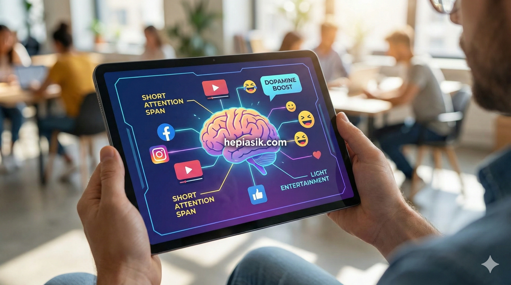

Kenapa Konten Hiburan Ringan Justru Paling Dicari
Di tengah arus informasi yang masif, cepat, dan sering kali melelahkan, satu fenomena menarik muncul: konten hiburan ringan justru menjadi primadona lintas platform digital. Mulai dari video pendek, meme, hingga podcast santai, semuanya memiliki satu fungsi utama yang sama, yakni sebagai stress relief. Fenomena ini bukan sekadar tren sesaat, melainkan refleksi mendalam dari perubahan psikologis, sosial, dan budaya masyarakat modern.
Tekanan Hidup Modern dan Kebutuhan Stress Relief
Masyarakat saat ini hidup dalam tekanan yang konstan, mulai dari tuntutan pekerjaan, ekspektasi sosial, hingga paparan berita negatif yang terus-menerus. Menurut World Health Organization, stres kronis menjadi salah satu faktor risiko utama gangguan kesehatan mental global. Dalam konteks ini, konten hiburan ringan berfungsi sebagai mekanisme koping yang mudah diakses.
Seperti dijelaskan dalam teori stres oleh Richard Lazarus (Stress and Emotion, 1999), manusia cenderung mencari bentuk regulasi emosi yang cepat dan minim usaha. Konten ringan memenuhi kebutuhan tersebut karena tidak menuntut konsentrasi tinggi, namun tetap memberikan pelepasan emosi. Kesimpulannya, hiburan ringan menjadi solusi adaptif untuk stress relief di tengah tekanan hidup modern.
Psikologi Otak dan Dopamin Instan
Dari sudut pandang neurosains, konsumsi konten hiburan ringan berkaitan erat dengan sistem dopamin otak. Daniel Kahneman (Thinking, Fast and Slow, 2011) menjelaskan bahwa otak manusia lebih menyukai aktivitas berpikir cepat (System 1) dibandingkan berpikir mendalam yang menguras energi.
Konten singkat dan menghibur memicu pelepasan dopamin dalam dosis kecil namun konsisten, memberikan rasa senang instan tanpa kelelahan kognitif. Harvard Medical School juga menyoroti bahwa stimulus ringan dapat membantu menurunkan ketegangan saraf secara sementara. Insight pentingnya, konten ringan bekerja selaras dengan mekanisme biologis otak untuk stress relief cepat.
Perubahan Pola Konsumsi Media Digital
Transformasi media digital mengubah cara manusia mengonsumsi informasi. Marshall McLuhan dalam Understanding Media (1964) menyatakan bahwa medium membentuk pesan. Platform seperti TikTok, Instagram Reels, dan YouTube Shorts mendorong konsumsi konten singkat, cepat, dan emosional.
Laporan Reuters Institute Digital News Report menunjukkan bahwa durasi perhatian audiens terus menurun. Dalam lanskap ini, konten hiburan ringan memiliki keunggulan kompetitif karena sesuai dengan keterbatasan waktu dan energi mental audiens. Dengan demikian, perubahan media memperkuat posisi konten ringan sebagai alat stress relief utama.
Hiburan Ringan sebagai Escapism Modern
Konsep escapism telah lama dibahas dalam kajian budaya populer. John Storey (Cultural Theory and Popular Culture, 2018) menekankan bahwa hiburan berfungsi sebagai pelarian sementara dari realitas yang menekan. Konten ringan memberikan ruang aman bagi individu untuk beristirahat secara mental.
Berbeda dengan hiburan berat yang membutuhkan keterlibatan emosional mendalam, hiburan ringan memungkinkan jeda psikologis tanpa komitmen. Media Psychology Journal mencatat bahwa escapism ringan justru lebih efektif sebagai stress relief jangka pendek dibandingkan distraksi kompleks. Intinya, hiburan ringan menawarkan pelarian yang sehat dan terkontrol.
Produktivitas, Bukan Kemalasan
Salah satu miskonsepsi besar adalah anggapan bahwa konsumsi hiburan ringan identik dengan kemalasan. Cal Newport (Deep Work, 2016) justru menekankan pentingnya jeda kognitif untuk menjaga fokus dan produktivitas jangka panjang.
Ketika digunakan secara sadar, konten hiburan ringan dapat berfungsi sebagai micro-break yang menyegarkan otak. American Psychological Association menegaskan bahwa istirahat singkat meningkatkan performa kerja. Kesimpulannya, hiburan ringan mendukung produktivitas melalui stress relief terukur.

Ekonomi Perhatian dan Strategi Platform
Dalam Attention Economy, perhatian adalah komoditas utama. Herbert Simon (Administrative Behavior, 1997) menyatakan bahwa kelimpahan informasi menciptakan kelangkaan perhatian. Platform digital merancang algoritma untuk mempertahankan perhatian melalui konten yang mudah dicerna.
Konten hiburan ringan memiliki tingkat retensi tinggi karena cepat dipahami dan memicu emosi positif. Data dari Google Think Insights menunjukkan bahwa konten ringan memiliki engagement rate lebih stabil. Insight utamanya, strategi platform memperkuat dominasi hiburan ringan sebagai sarana stress relief massal.
Dampak Sosial dan Keterhubungan Emosional
Selain fungsi individual, konten hiburan ringan juga memperkuat ikatan sosial. Sherry Turkle (Reclaiming Conversation, 2015) menjelaskan bahwa pengalaman emosional bersama, meski sederhana, membangun rasa keterhubungan.
Meme, video lucu, dan tren viral menjadi bahasa kolektif generasi digital. Pew Research Center mencatat bahwa berbagi konten hiburan meningkatkan rasa kebersamaan. Dengan demikian, hiburan ringan berperan ganda sebagai stress relief personal dan sosial.
Implikasi bagi Kreator dan Brand
Bagi kreator dan brand, memahami alasan di balik popularitas konten hiburan ringan sangat krusial. Philip Kotler (Marketing Management, 2016) menekankan pentingnya relevansi emosional dalam komunikasi merek.
Konten yang menawarkan stress relief tanpa terasa menjual cenderung membangun kepercayaan jangka panjang. HubSpot menyatakan bahwa audiens lebih responsif terhadap brand yang hadir secara manusiawi. Kesimpulannya, hiburan ringan adalah jembatan efektif antara nilai bisnis dan kebutuhan emosional audiens.